First, you will need this:
So, how do you do this?
Well, first you will ned to build the car itself
1) Build a 6x4 platform
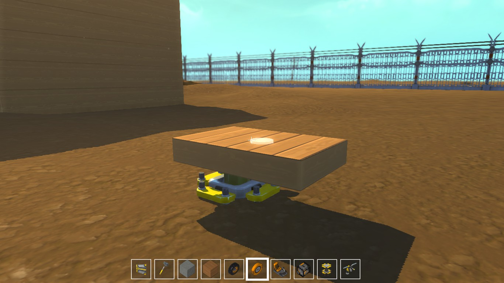2) Now, add the bearings
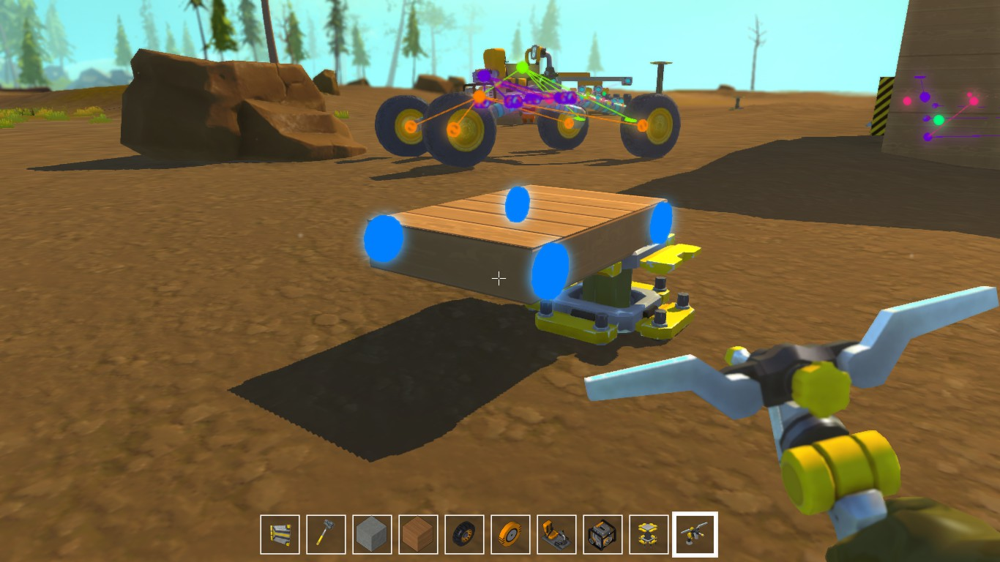3) Add a pipe on each bearing, and put another one
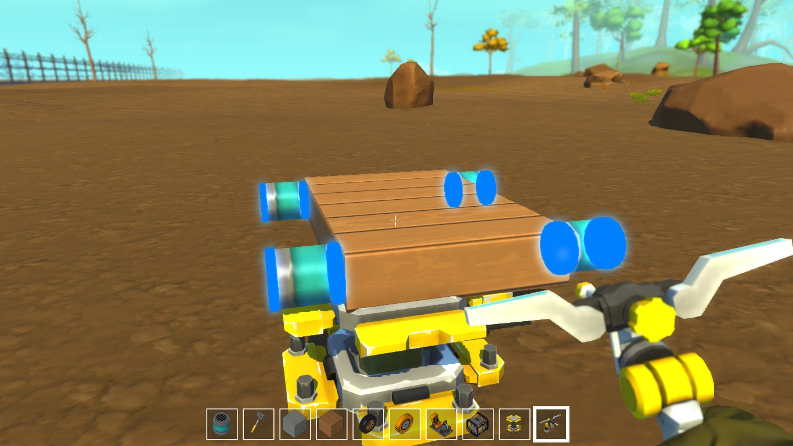4) For the front wheels, add a pipe corner and then 5 pipes for each wheel
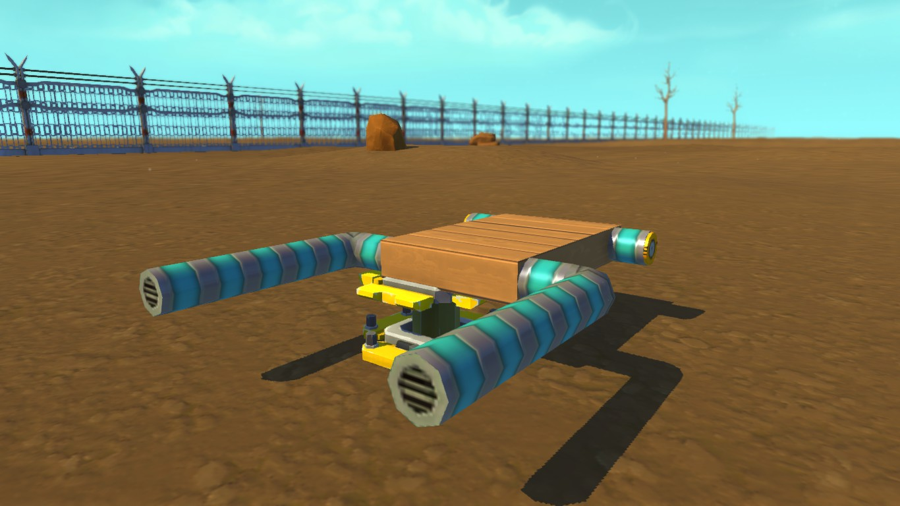5) Now, add pipe corners like this, using bearings after the first pipe corner
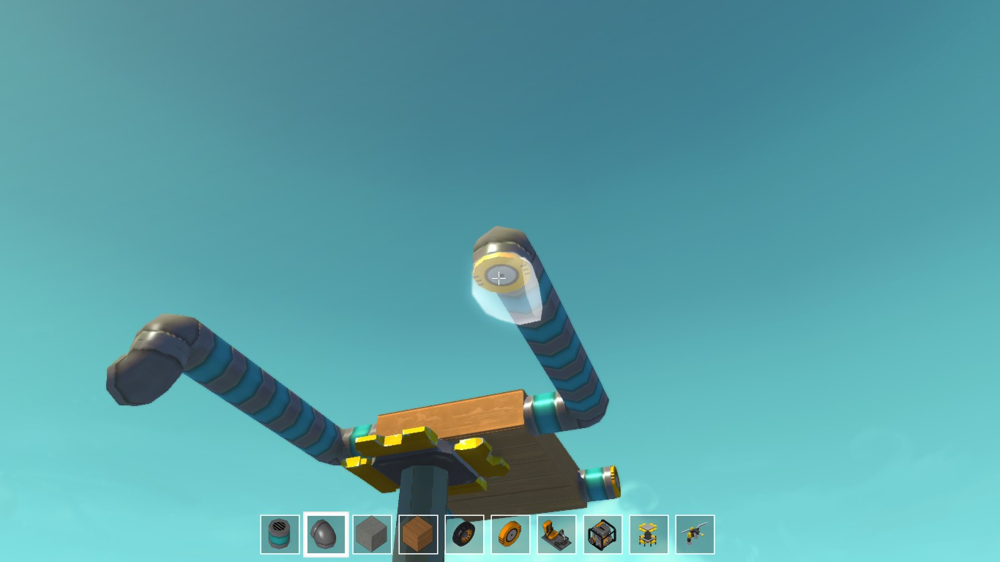6) Finally, put some bearings and the wheels and the front is done
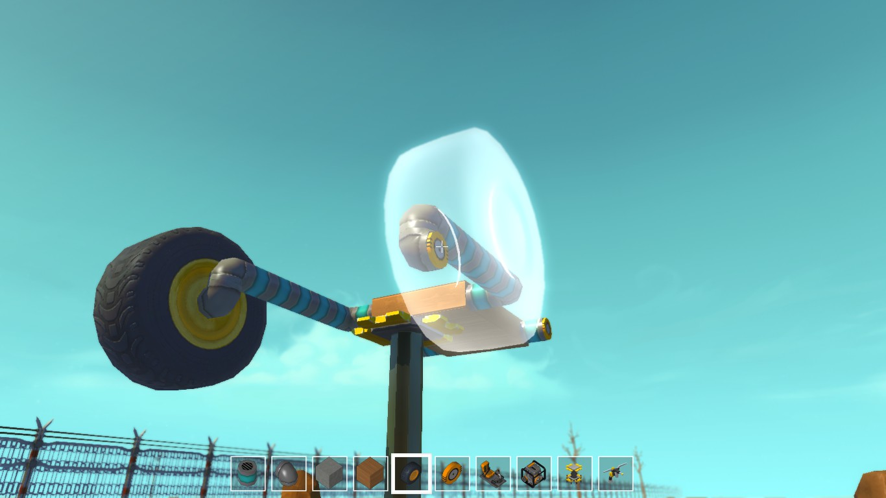7) The back wheels are easier, just add a pipe corner on each bearing
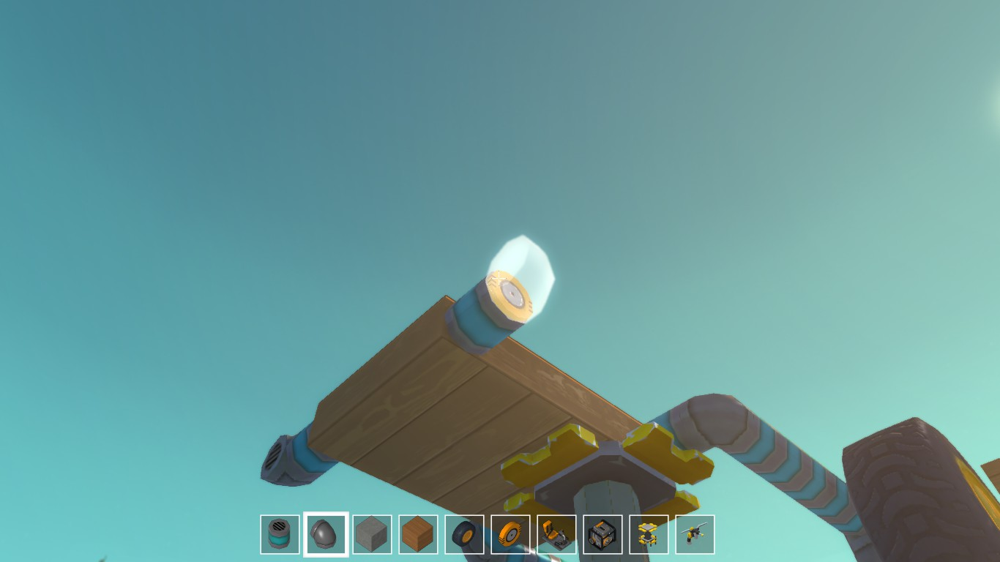8) Now add 5 short pipes on each part
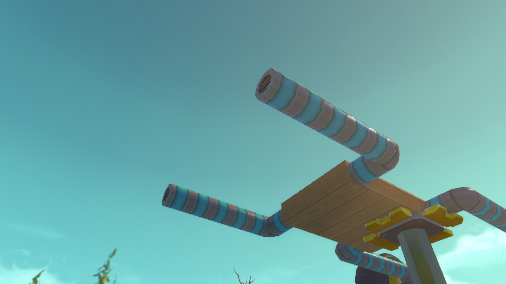9) Add a pipe corner, a bearing and a wheel
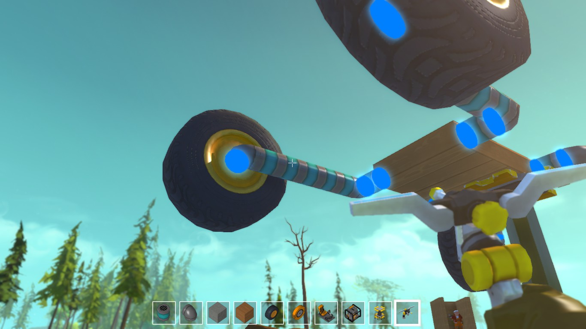10) Finally, place an engine and it's done! (Place it wherever you want it) (Just the normal car is done, not the whole car)
At the end, this is how the wheels should be placed on the car (let's call it a "space view").
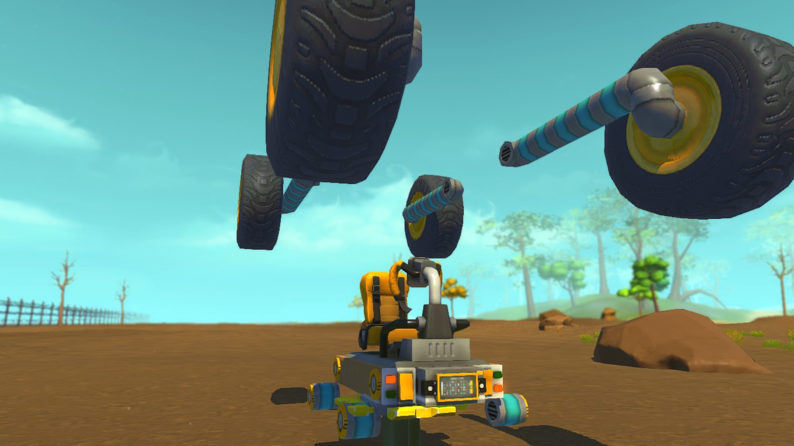 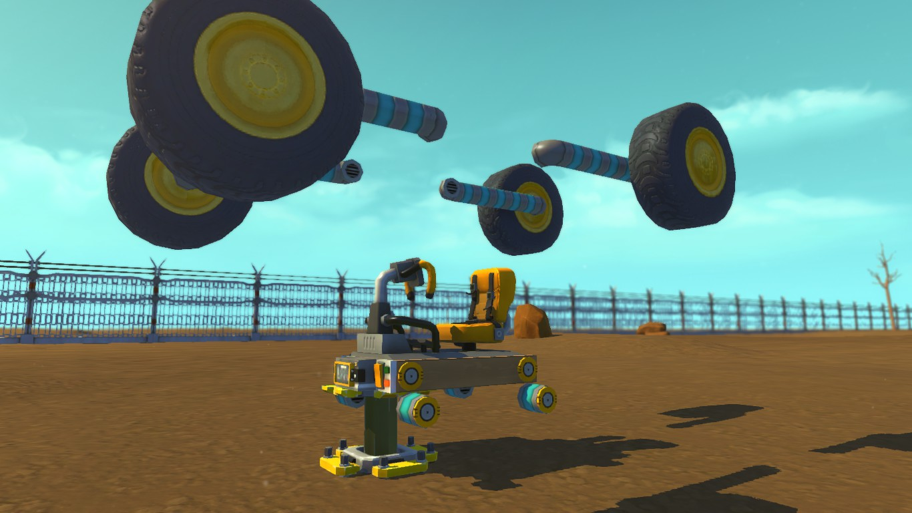WARNING! BEFORE YOU READ THIS, MAKE SURE YOU UNDERSTAND THIS IS JUST A SPACE VIEW OF THE CAR, NOT HOW THE ACTUAL CAR WILL LOOK
10) Now for the actual "mechanic" part, add a controller and 2 switches. You can put them wherever you want, but i prefer to put them like this, just for the style.
Now, connect one of them (it doesnt matter which one) to the controller.
11) Add a driver seat, and connect the switch to the driver seat
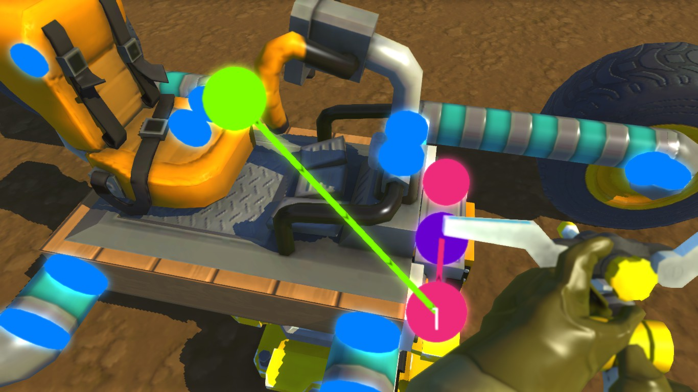12) Connect the controller to ONE set of bearings, like in the photo
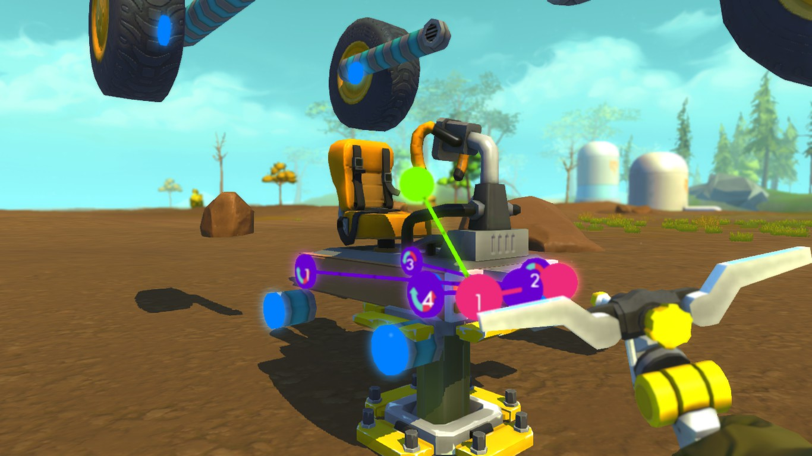13) Place another controller and connect it to the other set of bearings
Don't forget to connect the other switch to this controller
14) This is the angle settings for the new placed controller
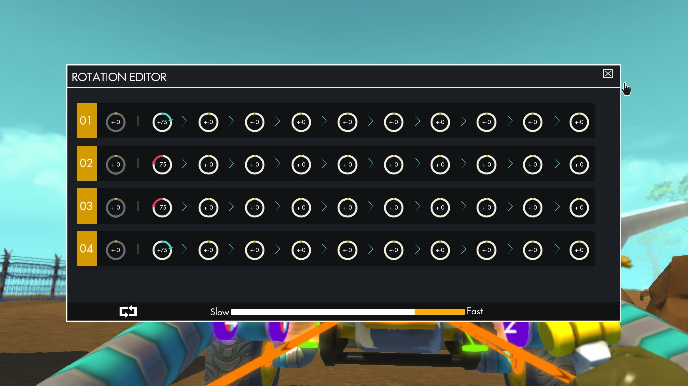15) And this is for the old-placed controller
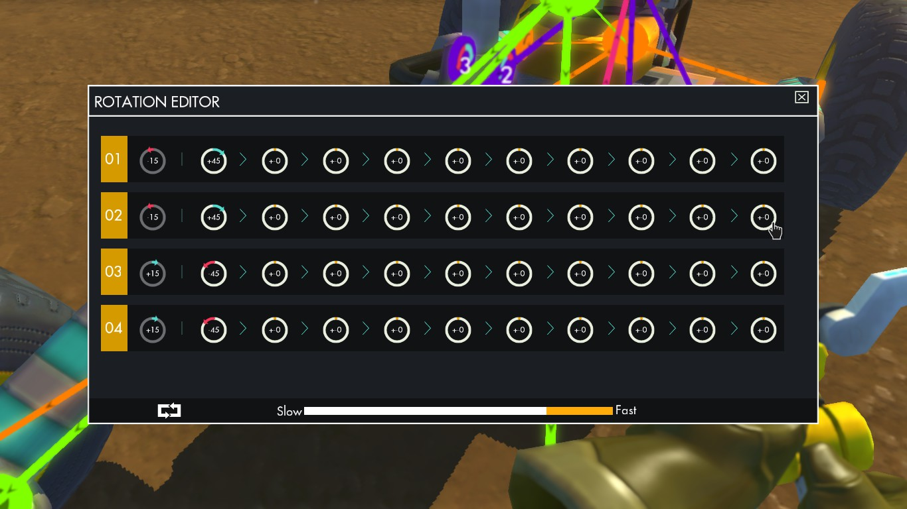16) Now, connect the switches to the driver seat, the driver seat to the engine and the front horizontal bearings (like in the photo below)
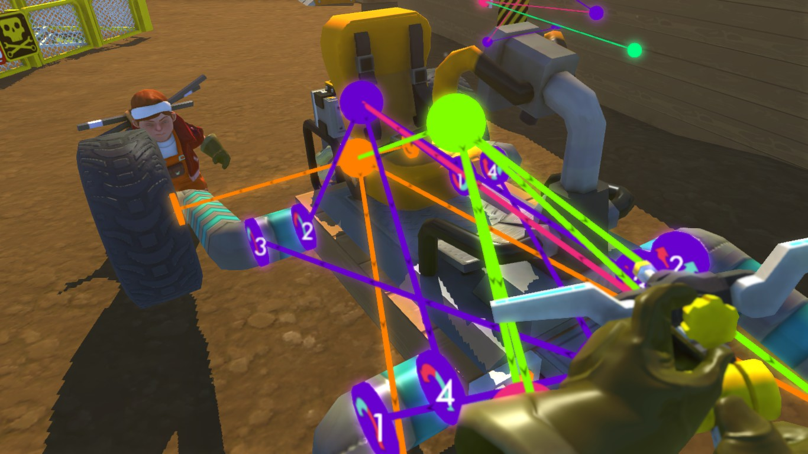WARNING! The text below depends on the order of the switches connected to the driver seat
Now, this should be you car
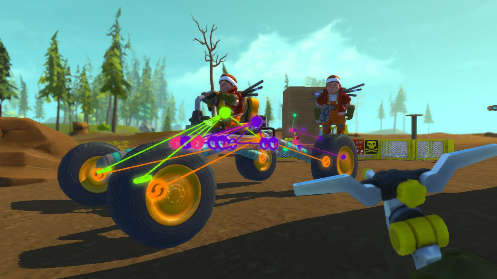The switches part is easy, the first button (in my order of connecting the switches) makes the wheel go up (or down if you are flipped over)
It should look like this:
(If it doesn't look like this, make sure you followed each step correctly)
You may wonder what the second button does? Well, if you didn't press the first switch, it will just raise up the driver seat. If you did pres the first button first, It will just raisen up the driver seat with 15 degrees more.